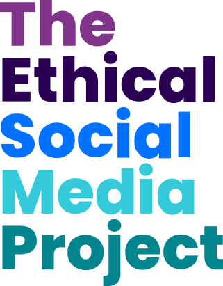

Thanks to the ubiquity of mobile phones, billions of people spend hours online every day. Social media applications are extremely popular with “at least 3.5 billion” people online and “one-in-three people in the world” use social media platforms.
The Ethical Social Media Project investigates how the features of social media are having a negative effect on people’s mental health. The project goes on to reimagine problematic features, providing solutions to help improve the user experience of social media.
Poppins
Bold
Montserrat
Regular
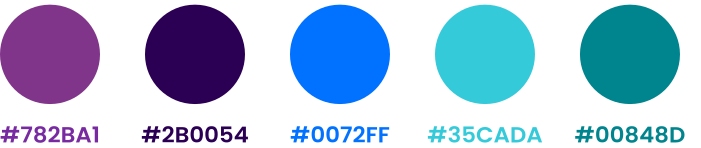
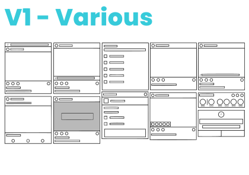
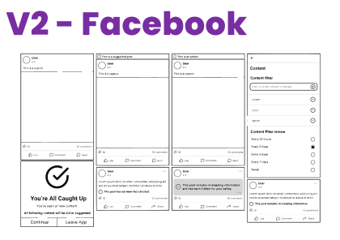
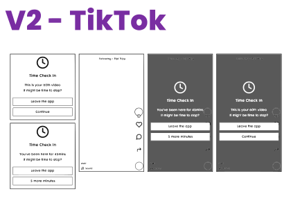
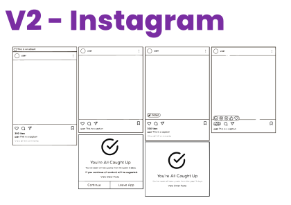
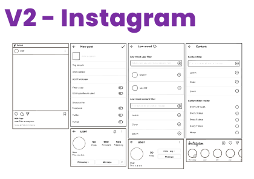
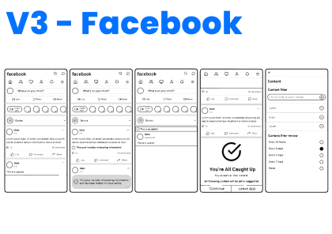
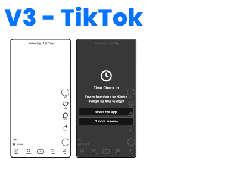
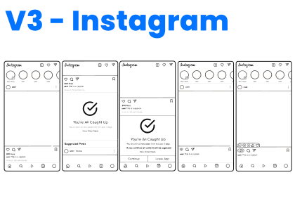
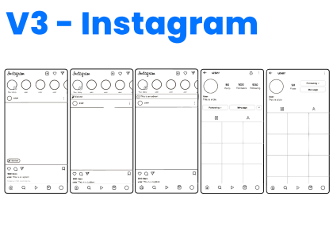
Interactive walkthroughs can be a key part of the design process, by allowing you to think about the user experience and assess the user journey.